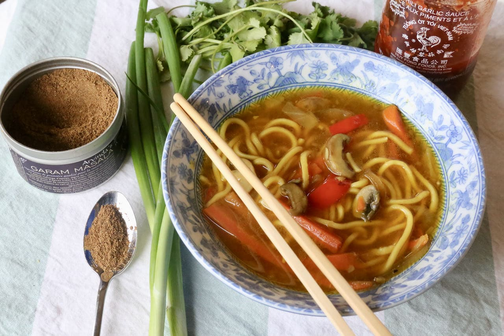

Thukpa

Thukpa is an tibetian dish that is commonly eaten in Nepal, it is very filling and easy to make and the ingridents can be change to fit your taste buds.
We will be focusing on making chicken thukpa.
Ingridents
- Rice Noodle or Spaghetti
- 2 tbsp. of vegitable oil
- Salt to taste
- Thukpa masala
- Carrots
- Chopped Onions
- Chopped Tomatoes
- 3 garlic cloves finely chopped
- 1 lemon or lime
- Chilli
- Chicken
Steps
- Heat up the pan, once the pan is hot; add the vegitable oil.
- Once the oil is heated, add the onion and stir it until its golden brown.
- Add the chopped garlic and stir it until its golden brown.
-